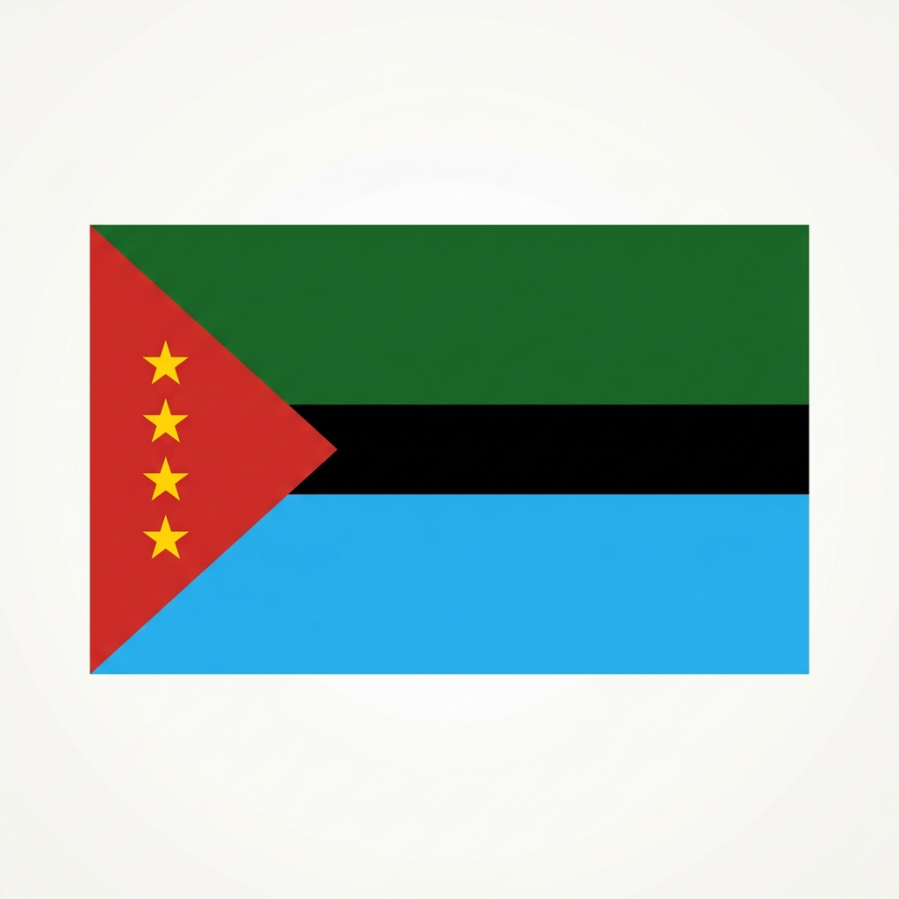

Fundado oficialmente en 1919 por el Presbítero Rosendo Vargas, Albania es
hoy un remanso de paz que conserva intacta la esencia del campesino santandereano. Sus
montañas cafeteras y valles frutícolas son el orgullo de su gente.
0
Metros de altitud
0
Grados centígrados
0
Veredas rurales
1919
Año de fundación
Nuestras Raíces
Historia Forjada en las Montañas
Desde un humilde paso de arrieros hasta convertirse en un municipio
próspero de la provincia de Vélez.
El territorio que hoy comprende Albania fue originalmente una zona de
tránsito para arrieros y comerciantes que recorrían las montañas de Santander. El caserío de
Pueblo Viejo fue el primer asentamiento reconocido oficialmente, cuando mediante la Ordenanza
Departamental 46 del 12 de julio de 1904, se creó el municipio con Pueblo Viejo como cabecera.
"Fue el Presbítero Rosendo Vargas quien, desde 1914, transformó la historia del municipio al
impulsar el poblamiento de la Mesa de Chevre, construyendo una escuela y la capilla de
Nuestra Señora del Carmen, sentando las bases de lo que sería la nueva cabecera municipal."
El 19 de agosto de 1919 se consolida definitivamente como municipio. Desde
entonces, el pueblo ha crecido en torno a su vocación agrícola, la calidez de su gente y el amor
por sus tradiciones campesinas.
1800s
Paso de Arrieros
El territorio era un corredor montañoso estratégico para arrieros y comerciantes de la provincia de Vélez, quienes descansaban en las pequeñas fondas del camino.
Leer más
1903
Intento de Fundación (Pariquí)
Se promulga la Ordenanza 70 de 1903 que intentaba erigir en municipio al caserío de Pariquí (Paquirí), mostrando el temprano deseo de descentralización y autonomía administrativa de la zona.
Leer más
1904
Creación en Pueblo Viejo
Mediante la Ordenanza Departamental 46 del 12 de julio de 1904 se crea formalmente el municipio, estableciendo a Pueblo Viejo como su cabecera inicial. Sin embargo, disputas y dificultades retrasaron su organización efectiva.
Leer más
1914
Mesa de Chévere
Llega el Presbítero Rosendo Vargas e impulsa la colonización de la "Mesa de Chévere" (Mesa del Carmen), fundando una escuela y la capilla de Nuestra Señora del Carmen, atrayendo a la población de veredas lejanas.
Leer más
1919
Fundación Oficial
El 19 de agosto de 1919 se consolida formalmente el municipio de Albania por la Asamblea Departamental de Santander, trasladando la cabecera a la Mesa de Chévere. Se adopta el nombre en honor a Don Carlos Albán.
Leer más
1950s
Auge Cafetero y Panelero
Se consolida la vocación caficultora y panelera en las veredas del municipio. La construcción de caminos rurales y escuelas veredales impulsa el crecimiento de la población rural albanesa.
Leer más
Actual
Eco-Turismo y Fruticultura
Hoy Albania destaca en la provincia de Vélez como un municipio de vanguardia en la producción de guayaba, pitahaya y gulupa, apostando fuertemente al turismo de naturaleza y la conservación hídrica.
Leer más
Mandatarios Recientes
Líderes locales que a través de diferentes periodos constitucionales han guiado el progreso y desarrollo de nuestro municipio.
🏛️
Andrés Javier Carrillo Pineda
Periodo: 2024 - 2027 (Actual)
Mandatario en funciones, enfocado en optimizar la conectividad vial de veredas, robustecer la cadena comercial de frutas locales y dinamizar el ecoturismo sostenible en la provincia.
📜
Humberto Urías Sierra Sánchez
Periodo: 2020 - 2023
Centró su administración en la mejora de vías terciarias, el desarrollo de infraestructura de agua potable y el apoyo al sector agropecuario y a juntas veredales.
⚖️
Roberto Arturo Reyes Ortiz
Periodo: 2016 - 2019
Priorizó la inversión social en educación rural, el mejoramiento de vivienda campesina y el fomento de proyectos asociativos agrícolas para jóvenes emprendedores.
🌱
José Vicente Rodríguez Ariza
Periodo: 2012 - 2015
Su gestión se orientó a la tecnificación del cultivo de café y guayaba, la optimización del servicio de salud básico y el fortalecimiento de la seguridad alimentaria.
🏗️
Félix María Parra González
Periodo: 2008 - 2011
Promovió el embellecimiento del parque principal, la pavimentación urbana y la electrificación de veredas distantes de la cabecera municipal.
Identidad Municipal
Símbolos Patrios de Albania
Los emblemas oficiales que representan la geografía, el trabajo y el honor del pueblo albanés.

Bandera Municipal
Triángulo Rojo (Asta): Representa la sangre trabajadora, progresista y el valor de los habitantes del municipio.
Cuatro Estrellas: Simbolizan las inspecciones de policía fundacionales del municipio: La Mesa, El Hatillo, Guacos y Carretero.
Franja Verde (Superior): Representa la riqueza forestal, la exuberancia de la vegetación y los cultivos cafeteros.
Franja Negra (Media): Representa la fertilidad de la tierra y los ricos recursos minerales de carbón del subsuelo.
Franja Azul (Inferior): Simboliza la inmensa riqueza hídrica de los ríos y quebradas que riegan el municipio.
Escudo de Armas
Pabellones y Corona: La corona mural y los pabellones laterales de la bandera expresan la soberanía municipal y orgullo patrio.
Grano de Café: Exalta el fruto principal de la agricultura local que ha sostenido la economía familiar.
Arco y Flecha: Homenaje al Cacique Cheveri, líder de los antiguos pobladores indígenas y símbolo de resistencia.
Machete y Azadón: Rinde tributo a la labor del campesino santandereano que trabaja la tierra día a día.
Cabeza de Ganado: Destaca la tradición lechera y pecuaria, en especial en el corregimiento de La Mesa.
Lema "Justicia, Paz y Progreso": El norte ético que guía el desarrollo social e institucional de sus habitantes.
🎼
Himno de Albania
CORO
A la gloria de Albania cantemos
Con orgullo este himno de honor,
Corazones limpios ofrendemos
A este pueblo de hazaña y valor.
El himno de Albania exalta su ascendencia de libertadores comuneros y la herencia de trabajo y orgullo santandereano.
Estrofa I
Albaneses, alegres cantamos
Este himno que nos hace hermanos
De ancestros comuneros venimos,
Los heraldos de la libertad
De tus héroes, la sangre hoy fecunda
Nuestro anhelo de paz y verdad.
Estrofa II
Santander, tierra de hombres bravos,
Por doquier rompieron las cadenas;
Y al grito de independencia, vibran
Con coraje los pueblos de sur,
Que en vasta cordillera hoy levantan
Al cielo su emblema tricolor.
Estrofa III
Centinelas, guardaron por las cruces
El Diamante, La Palma y Canutillo
Y asistidos por varonil empuje
Viejos graces, hicieron detonar
En el aire, un grito era consigna
"Hay peligro, vengan pronto a atacar".
Estrofa IV
Fiero empeño de ilustres fundadores
Recordemos, y en tan feliz memoria
Elevamos en dádivas al cielo,
Las plegarias en férvida oración.
Que su ejemplo, llevemos como antorcha
Sacrificio, de eterna admiración.
Estrofa V
Como ejemplo de sus invictos héroes
Hoy y siempre la libertad no acalle
Y si un día las perfidias insidias
Nuestra paz llegara a entorpecer
Albaneses; Oh inmarcesible causa,
Con tesón, vayamos a defender.
Estrofa VI
Paquirí, Cuzco, Chevre y la mesa
Finalmente, el general guerrero,
En memoria de don Carlos Albán,
Dole el nombre de Albania, en gratitud
A su amigo, que en perfidia asechanza,
Muerte infame, creyeron por virtud.
Estrofa VII
El Hatillo, Mesa Y Cachovenado,
Carretero y Guacos van formando
Pentagrama de mitos y leyendas
De mi Albania, en un solo corazón,
Noble raza y Guanes, nos legaron
Tierra linda de ensueño y tradición.
Estrofa VIII
Claras noches de plateada luna,
Vibra el alma en la inspiración profunda
Sueña el hombre, la abnegación eterna,
Brilla el alba ¡Que bello amanecer!
Tradiciones, guabinas y bambucos,
Torbellinos se bailan por doquier.
Tierra Fértil
Economía y Comercio Frutícola
Albania se posiciona como despensa de frutas andinas y cafés de especialidad de la provincia de Vélez.
🍈
Comercio de Guayaba
Es el principal motor agrícola de Albania. El municipio abastece a gran escala a las fábricas de la provincia de Vélez para la producción del famoso Bocadillo Veleño con denominación de origen.
🍈
Producción de Guanábana
Las veredas de clima templado de Albania producen guanábana de excelente tamaño y gran dulzor. Su pulpa de alta calidad es muy demandada en los mercados mayoristas de Bogotá y Bucaramanga.
🐉
Pitahaya de Exportación
Cultivo frutícola con alto crecimiento. Los suelos y condiciones climáticas del municipio permiten producir una pitahaya amarilla premium con destino a mercados nacionales e internacionales.
☕
Cafés Especiales
Pilar de la economía familiar campesina. El café arábigo cultivado bajo sombrío en las laderas andinas destaca por sus notas suaves, cuerpo balanceado y excelente perfil de taza.
🍬
Caña y Panela Orgánica
Trapiches tradicionales procesan de forma artesanal la caña panelera, manteniendo vivas las técnicas campesinas tradicionales y ofreciendo panela pura y orgánica a la región.
Conectividad
Ubicación y Rutas de Llegada
Cómo llegar al municipio desde la capital del país y sus límites geográficos territoriales.
Límites Territoriales
Albania está situado en el extremo sur del departamento de Santander, colindando directamente con el departamento de Boyacá.
🧭
Límite Norte
Municipio de Jesús María (Santander)
🧭
Límite Sur
Municipios de Tununguá y Saboyá (Boyacá)
🧭
Límite Este
Municipio de Puente Nacional (Santander)
🧭
Límite Oeste y Noroeste
Municipio de Florián (Santander)
Ruta de Llegada desde Bogotá
📍
Bogotá
Punto de partida saliendo por la Autopista Norte.
🥛
Villa de San Diego de Ubaté
Capital lechera de Colombia (Cundinamarca).
⛪
Chiquinquirá
Importante centro urbano y religioso (Boyacá).
🛣️
Briceño
Punto de desvío de la vía principal (Boyacá).
⛰️
Albania
¡Destino final en la Provincia de Vélez, Santander!
Explora
Atractivos Turísticos
Lugares únicos que reflejan la belleza natural y el patrimonio
arquitectónico de nuestra región.
Paisaje Andino
Mirador de Albania
Punto estratégico en la cordillera que ofrece vistas
panorámicas de las montañas santandereanas. Ideal para divisar los cultivos de café y
caña de azúcar.
Patrimonio Local
Templo San Roque
Joya arquitectónica de la provincia de Vélez, centro
espiritual y reflejo de la devoción campesina de generaciones de albaneses.
Ríos Veleños
Río Lenguazaque
Balneario natural de aguas frescas rodeado de la vegetación
típica del clima templado santandereano. Un espacio de encuentro familiar.
Sabores de la Montaña
Gastronomía Santandereana
Delicias culinarias que representan la sazón única de la provincia de
Vélez y la riqueza de nuestros campos.
🍲 Mute Santandereano
Sopa tradicional con maíz, frijoles y garbanzos. El plato
insignia que no puede faltar en las mesas de las familias campesinas.
🍬 Bocadillo Veleño
Siendo un municipio productor de guayaba, el dulce tradicional
veleño es orgullo local, perfecto acompañado con queso campesino.
🐜 Hormigas Culonas
Manjar exótico y ancestral que distingue a Santander. Tostadas
con sal, son un snack crujiente emblemático de nuestra cultura.
Visítanos
¡Te esperamos en Albania!
Contáctanos para más información turística y planes de visita.